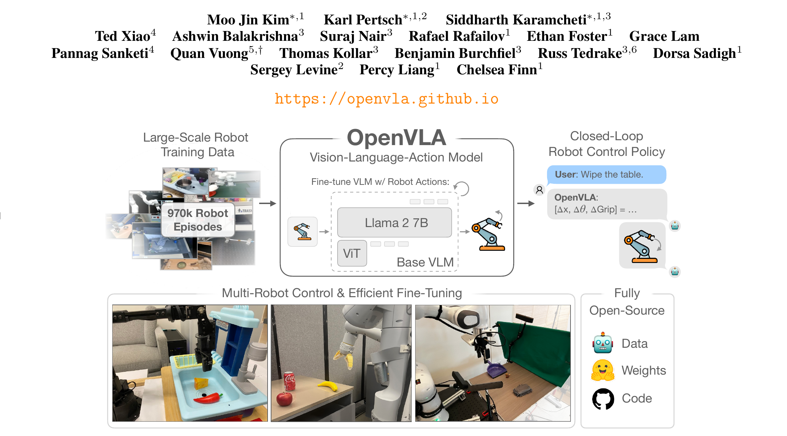
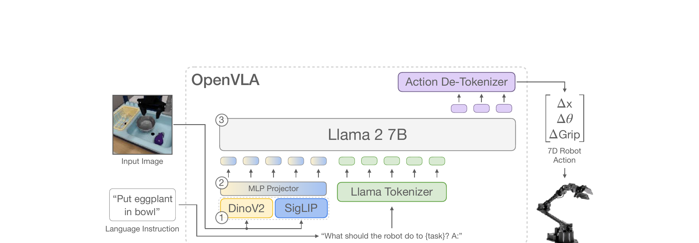
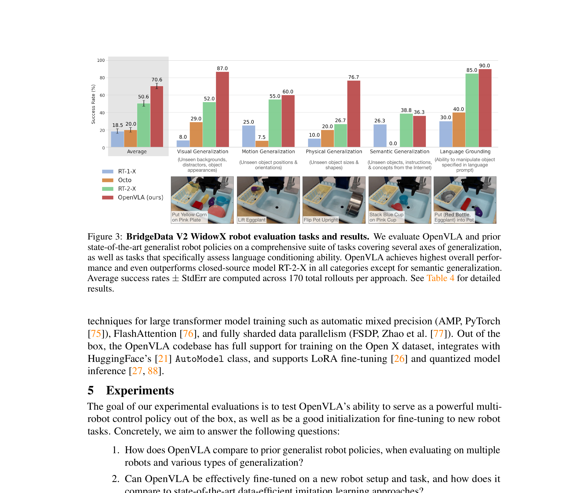
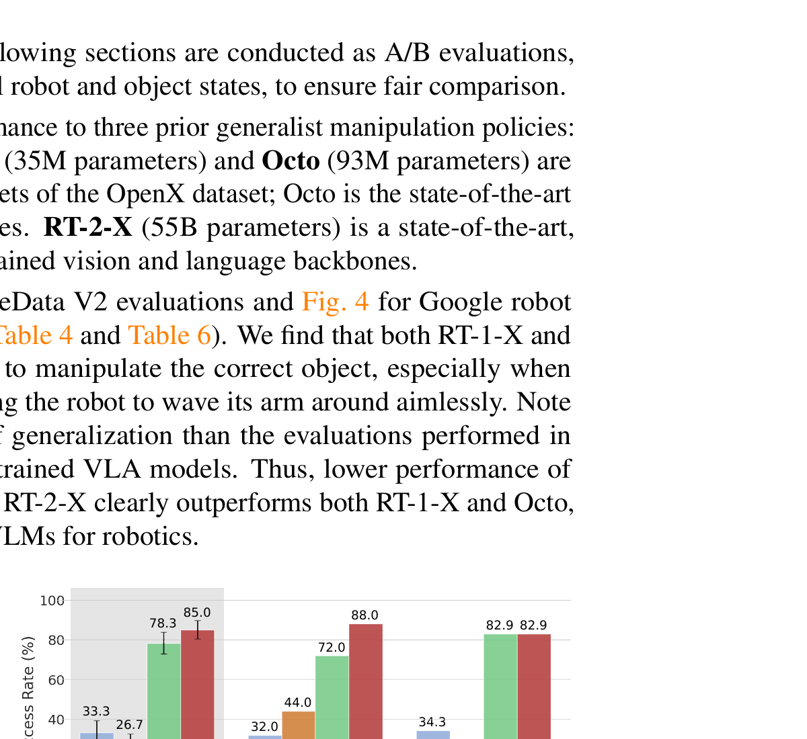
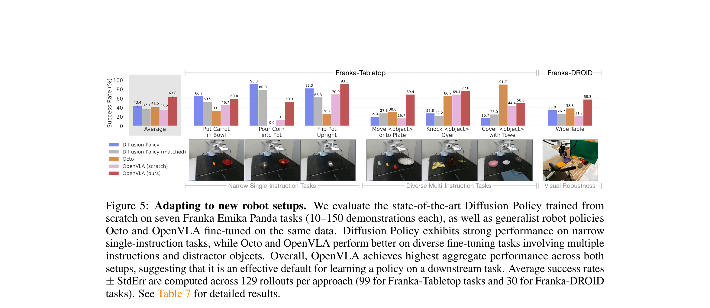
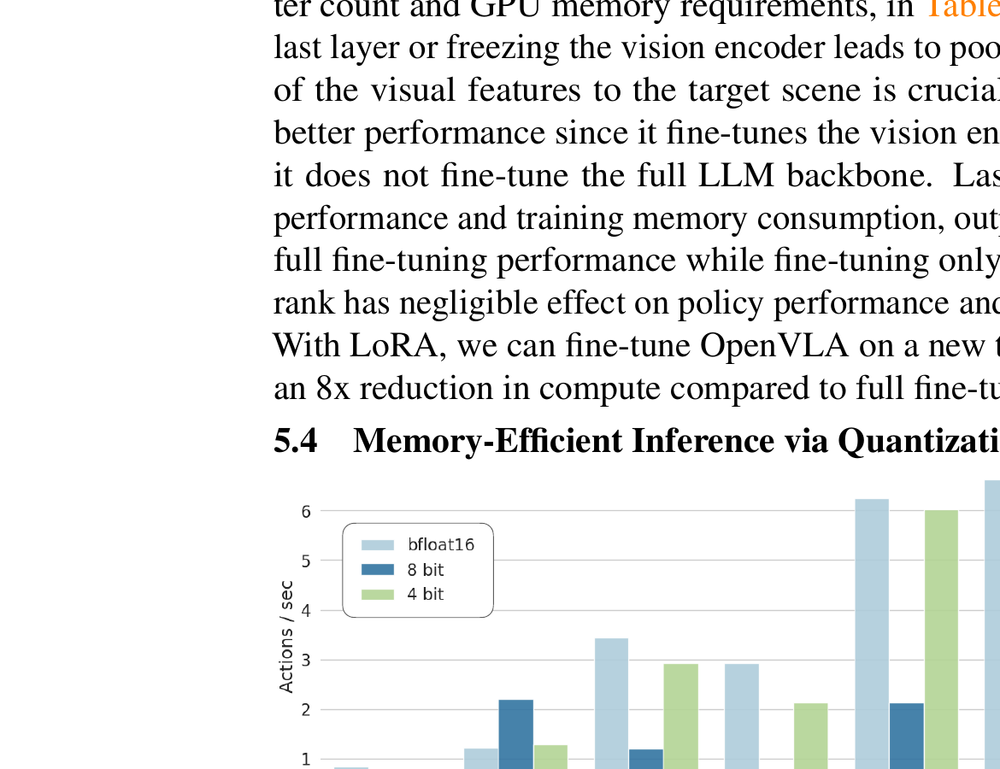

OpenVLA: An Open-Source Vision-Language-Action Model
一句话总结
OpenVLA 是第一个完全开源的通用机器人策略模型。它把一个预训练好的视觉-语言模型（Prismatic-7B）直接微调成能输出机器人动作的 VLA，在 970k 条真实机器人轨迹上训练后，比 55B 参数的闭源 RT-2-X 还强 16.5%，而参数量只有它的 1/8。
类比：如果 RT-2-X 是 GPT-4（强但闭源），OpenVLA 就是 LLaMA——开源、可微调、消费级 GPU 能跑。

为什么需要 OpenVLA
上一节看到 OpenVLA 的全貌——用 VLM 做机器人策略。但为什么不直接用 RT-2-X？两个字：闭源。RT-2-X (55B) 效果好，但你拿不到权重、看不到训练代码、无法在自己的机器人上微调。Octo 虽然开源，但它不是 VLA——没有大规模 Internet 预训练带来的语义理解能力。
展开原文 · 现有 VLA 的两个问题
"There are two key reasons preventing the widespread use of existing VLAs: 1) current models are closed, with limited visibility into model architecture, training procedures, and data mixture, and 2) existing works do not provide best practices for deploying and adapting VLAs to new robots, environments, and tasks — especially on commodity hardware."
与 RT-2-X / Octo 的定位对比
| RT-2-X | Octo | OpenVLA | |
| 参数量 | 55B | 93M | 7B |
| 骨干 | PaLI-X (闭源 VLM) | Transformer (从头训练) | Prismatic-7B (开源 VLM) |
| Internet 预训练 | ✅ 万亿 token | ❌ 无 | ✅ VLM 预训练继承 |
| 开源 | ❌ 闭源 | ✅ 开源 | ✅ 完全开源 |
| 动作输出 | 离散 token | 连续 (Diffusion head) | 离散 token (256 bin) |
| Fine-tuning 支持 | ❌ 不支持 | ✅ 支持 | ✅ 支持 (含 LoRA) |
| 消费级 GPU 可用 | ❌ | ✅ | ✅ (4-bit 量化 → 7GB VRAM) |
OpenVLA = RT-2 的架构思路（VLM → 动作 token）+ Octo 的开源精神（权重 / 代码 / 数据全开放）+ 更大更好的数据（970k vs 350k 轨迹）。
模型架构
上一节讲了 OpenVLA 的定位——开源 VLA，融合了 VLM 预训练的语义理解。这一节拆开看具体的三个组件：视觉编码器怎么看图、语言模型怎么思考、动作怎么输出。
OpenVLA 的架构出奇地简单——它就是一个标准的 VLM（视觉-语言模型），只不过把"输出自然语言"换成了"输出动作 token"。这种极简设计是刻意的：VLM 的训练基础设施已经非常成熟（HuggingFace、FSDP、FlashAttention 全能用），直接复用比从头造轮子高效得多。

第 1 步：接收图像
机器人摄像头拍一张 224×224 的 RGB 图像。只有一张、没有历史——这和 π₀ 系列（用多帧观测）不同。
第 2 步：双编码器提取视觉特征
图像同时送入 DINOv2（空间特征）和 SigLIP（语义特征），各输出一组 patch token。两组特征在 channel 维度拼接——一边知道"在哪里"，一边知道"是什么"。
第 3 步：MLP 投影到语言空间
拼接后的视觉特征经 2 层 MLP 映射到 Llama 的 embedding 空间，变成一组"视觉 token"，和语言 token 一样被 Llama 处理。
第 4 步：语言指令编码
用户给的指令（如 "Put eggplant in bowl"）经 Llama Tokenizer 编码。格式化为："What should the robot do to {task}? A:"
第 5 步：Llama 2 7B 生成动作 token
Llama 接收 [视觉 token] + [语言 token] 的序列，用标准 next-token prediction 依次生成 7 个动作 token。loss 只算在动作 token 上——图像和语言部分不算 loss。
第 6 步：解码为连续动作
7 个 token（每个 ∈ [0, 255]）通过 de-tokenizer 还原为连续值：3D 平移 + 3D 旋转 + 1D 夹爪 = 7D 动作。发送给机器人执行，然后回到第 1 步。
3.2 双编码器：SigLIP + DINOv2
SigLIP 擅长语义（"这是一个碗"）但空间信息弱；DINOv2 擅长空间（"碗在桌子左边 15cm 处"）但语义信息弱。机器人操作两样都要：既要知道该拿什么（语义），也要知道怎么够到（空间）。
实验证明：Prismatic（SigLIP + DINOv2 融合）比 CLIP-only 或 SigLIP-only 的 VLM 在语言定位任务上高 10%。
展开原文 · 为什么选 Prismatic
"Prismatic uses a two-part visual encoder, consisting of pretrained SigLIP and DiNOv2 models. Input image patches are passed separately through both encoders and the resulting feature vectors are concatenated channel-wise."
3.3 动作离散化：256-bin Tokenization
机器人动作是连续值（比如 Δx = 0.02m），但 Llama 只会做 next-token prediction。解决方案：把每个维度的连续范围切成 256 个 bin，每个 bin 对应一个 token ID。
bin 边界：用训练数据每个维度的第 1 和第 99 百分位数作为上下界，均匀切 256 份。用百分位而非 min-max 是为了忽略异常值。
token 复用：Llama tokenizer 只预留了 100 个 special token，不够 256 个。解法是覆盖 vocabulary 中最不常用的 256 个 token（跟 RT-2 一样的 trick）。
7D → 7 token：一个 N 维动作 = N 个离散整数 ∈ [0, 255]，每个对应一个 token。
3.4 端到端推理流程
1. 接收图像 $I$ 和语言指令 $l$
2. 视觉编码：$v = \text{MLP}(\text{concat}(\text{SigLIP}(I), \text{DINOv2}(I)))$
3. 语言编码：$t = \text{LlamaTokenizer}(\texttt{"What should the robot do to } l \texttt{? A:"})$
4. 自回归生成：$a_1, a_2, \dots, a_7 = \text{Llama}([v; t])$
5. 解码：$\Delta x, \Delta\theta, \Delta\text{Grip} = \text{DeTok}(a_1, \dots, a_7)$
6. 执行 → 回到 1
训练
上一节看到 OpenVLA 的架构其实就是一个标准 VLM + 动作 token。架构这么简单，差异化就在数据和训练细节上。这一节看三件事：用什么数据、怎么训练、以及几个关键的设计决定（每一个都经过消融实验验证）。
4.1 数据：970k 轨迹 · Open X-Embodiment
Open X-Embodiment 是目前最大的开源机器人数据集（70+ 子数据集、200 万轨迹）。但不能直接全用——需要精心筛选和加权。
只保留：(1) 桌面操作任务 (manipulation)；(2) 至少有一个第三人称摄像头；(3) 单臂末端执行器控制。
加权：沿用 Octo 的 mixture weight——对多样性高的数据集上调权重，单一场景的下调。
DROID 插曲：尝试加入 DROID 数据集（10% 权重），但训练中动作 token 准确率始终上不去，最终在后 1/3 训练中移除。
4.2 训练配方
| 基座模型 | Prismatic-7B VLM（已在 LLaVA 1.5 数据上预训练） |
| 训练目标 | Next-token prediction，loss 只算动作 token |
| 图像分辨率 | 224 × 224 |
| Batch size | 2048 |
| 学习率 | 2e-5（固定，无 warmup） |
| 训练 epoch | 27 epoch（远多于 VLM 的 1-2 epoch） |
| GPU | 64 × A100，14 天（21,500 A100·h） |
4.3 关键设计决定
OpenVLA 团队在 BridgeData V2 上做了大量消融实验，发现了几个和 VLM 训练完全相反的结论。这些结论对你以后训练 VLA 非常重要。
实验
前面讲了架构（简单的 VLM + 动作 token）和训练（970k 数据、27 epoch、微调视觉编码器）。现在来看实际能不能用。OpenVLA 在两个机器人平台上做了 zero-shot 评测（WidowX + Google Robot），还测了 fine-tuning 到新机器人（Franka）的效果。
5.1 BridgeData V2 · WidowX 评测

5.2 Google Robot 评测
在 Google 的移动操作机器人上测试——OpenVLA 和 RT-2-X 打平（78.3% vs 85.0% in-distribution，82.9% vs 82.9% OOD）。但 OpenVLA 的参数量只有 1/8，且完全开源。

5.3 Fine-tuning 到新机器人 · Franka
真正的杀手锏不是 zero-shot——而是用 10-150 个 demo 就能适配新机器人。在 Franka 上，OpenVLA fine-tuned 比 Diffusion Policy 高 20.4%，尤其在多物体 + 语言指令的场景下碾压。

Diffusion Policy 在窄任务上更精确（如 "Put Carrot in Bowl"），因为它能输出更平滑的连续轨迹。但在多物体 + 多指令场景下，OpenVLA 的语言理解能力是决定性优势——Diffusion Policy 没有 VLM 的语义先验。
效率：LoRA + 量化
前一节看到 OpenVLA 效果好，但 7B 模型训练要 64×A100 跑 14 天——普通人负担不起。这一节回答实际落地的关键问题：能不能用更便宜的方式训练和部署？
6.1 LoRA 微调 · 1 张 A100 就够
| 策略 | 成功率 | 训练参数 | VRAM |
| Full Fine-Tuning | 69.7 ± 7.2% | 7,188M (100%) | 163 GB* |
| Last Layer Only | 30.3 ± 6.1% | 465M | 51.4 GB |
| Frozen Vision | 47.0 ± 6.9% | 6,760M | 156 GB* |
| Sandwich | 62.1 ± 7.9% | 914M | 64.0 GB |
| LoRA (r=32) | 68.2 ± 7.5% | 97.6M (1.4%) | 59.7 GB |
LoRA (r=32) 只训练 1.4% 的参数，但效果几乎等于 full fine-tuning（68.2% vs 69.7%）。一张 A100 跑 10-15 小时就能适配新任务——比 full FT 快 8 倍。r=32 和 r=64 效果一样，所以推荐 r=32。
6.2 量化推理 · 消费级 GPU 可用

| 精度 | 成功率 | VRAM |
| bfloat16 | 71.3 ± 4.8% | 16.8 GB |
| int8 | 58.1 ± 5.1% | 10.2 GB |
| int4 | 71.9 ± 4.7% | 7.0 GB |
int4 量化不掉性能（71.9% ≈ 71.3%），VRAM 从 16.8GB 降到 7.0GB。8-bit 反而性能下降——因为量化操作的 overhead 拖慢了推理速度，改变了控制频率。A5000 上 4-bit 可跑 3Hz，匹配 BridgeData V2 的 5Hz 非阻塞控制器。
局限性 & 从 OpenVLA 到 π₀
OpenVLA 证明了"开源 VLA 能打"，但它有几个结构性的局限——恰好对应了后来 π₀ 系列解决的方向。理解这些局限，就理解了 VLA 领域的演进逻辑。
7.2 OpenVLA → π₀：进化路线图
如果你已经读了 π₀ 系列的笔记，下面这张对照表会帮你把知识串起来。OpenVLA 和 π₀ 代表了 VLA 的两条技术路线：离散 token vs 连续 flow。
| OpenVLA | π₀ | |
| 动作表示 | 离散 token (256 bin) | 连续 (Flow Matching) |
| 动作精度 | 1/256 ≈ 0.4% 分辨率 | 理论无限精度 |
| Action Chunking | ❌ 单步 | ✅ 多步（chunk = 50） |
| VLM 骨干 | Llama 2 7B | PaliGemma 3B → Gemma3 4B |
| 视觉编码器 | SigLIP + DINOv2 (融合) | SigLIP (单编码器) |
| 训练范式 | Next-token prediction | Flow Matching (去噪) |
| 观测历史 | 单帧 | 多帧 |
| 灵巧操作 | 有限（抓放为主） | 强（折叠、擦桌、双臂） |
| 开源 | ✅ 完全开源 | 部分（π₀.₅ 开源权重） |
OpenVLA 的哲学：最大限度复用 VLM 基础设施。动作就是 token，训练就是 next-token prediction，部署就是 LLM serving。简单、可扩展、工程友好。
π₀ 的哲学：针对机器人控制定制架构。Action Expert 专门处理动作，Flow Matching 输出连续轨迹，Block-Causal Attention 兼顾语言理解和动作精度。更复杂、但上限更高。
读完 OpenVLA，你已经理解了 VLA 的基本范式（VLM + 动作输出）。回头看 π₀ 系列笔记，会发现 π₀ 的每一个设计决定都在回应 OpenVLA 的某个局限。这就是论文之间的"对话"。